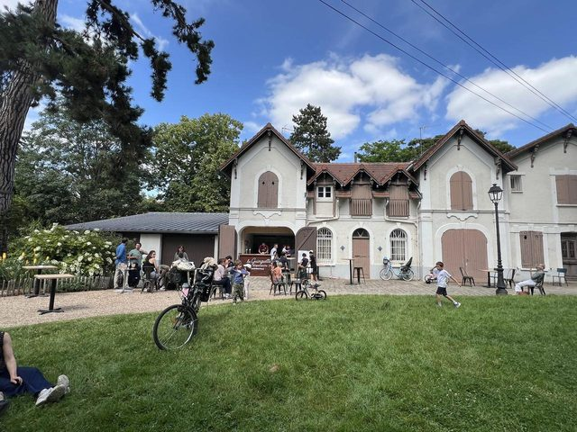

Vous cherchez une guinguette à Sartrouville pour boire un verre en terrasse, en famille ou entre amis ? Bienvenue à La Guinguette du Dispensaire, le bar en plein air installé au cœur du Parc du Dispensaire, à deux pas de l'aire de jeux pour enfants.
Une guinguette en plein cœur de Sartrouville
Nichée dans les anciennes écuries du Parc du Dispensaire, en centre-ville de Sartrouville (Yvelines), la guinguette renoue avec l'esprit des guinguettes d'antan : convivial, familial et festif. Sous les arbres, la terrasse ombragée est l'endroit idéal pour souffler après le travail, prolonger un après-midi au parc ou retrouver ses proches le week-end.

Bières pression, vins et planches à partager
Côté bar, on sert des bières pression fraîches et une sélection de vins signée Pépites de Vin — rosé de Provence, blanc de Bourgogne, rouges de la Vallée du Rhône et du Languedoc, prosecco… Pour accompagner, place aux planches de charcuterie et de fromage, aux frites maison, aux planches à partager et aux glaces. Un menu enfant à 9 € complète la carte pour que toute la famille trouve son bonheur.
Envie de tout voir avant de venir ? Parcourez la carte complète de la guinguette ou notre menu en version imprimable.
Concerts, jeux et bonne humeur tout l'été
La Guinguette du Dispensaire, ce n'est pas qu'un bar : c'est aussi une programmation festive avec des concerts live, des soirées estivales et des jeux de plein air (Mölkky, palet breton, pétanque…). Familles bienvenues, ambiance détendue : on s'y retrouve, on s'y attarde, et on y revient.
Horaires et accès
La guinguette est ouverte de juin à octobre 2026 (fermée le lundi), avec des horaires adaptés selon les jours et la météo. On vient facilement : RER A station Sartrouville, bus à proximité, et parking gratuit sur place. Retrouvez le détail des horaires et le plan d'accès sur la page Infos & accès.
Envie de pousser la porte ?
Réservez votre table dans le parc ou jetez un œil à la carte. On vous attend au Parc du Dispensaire, à Sartrouville.
Réserver une table Voir la carte